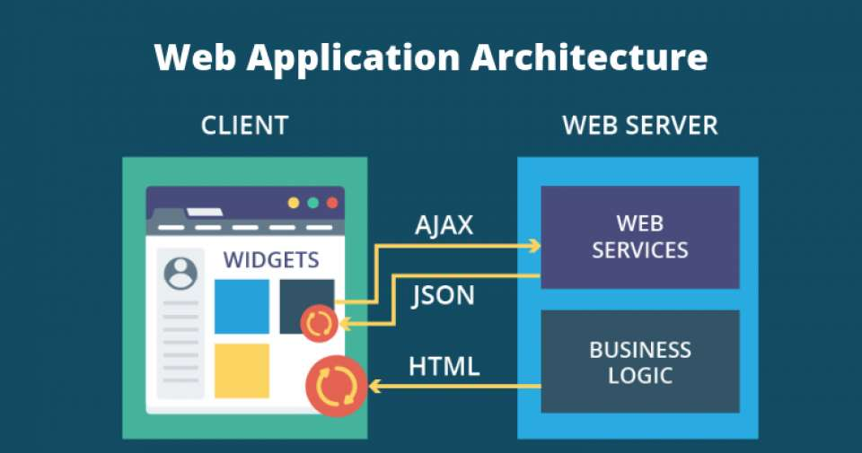
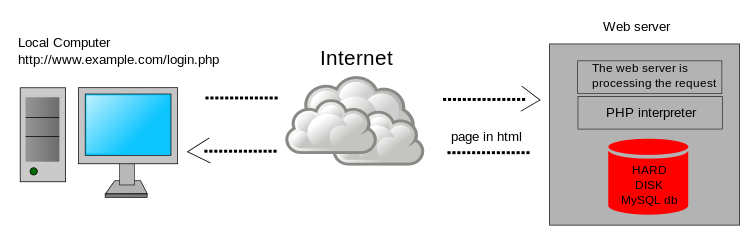

The Client-server model is a distributed application structure that partitions task or workload between the providers of a resource or service, called servers, and service requesters called clients. In the client-server architecture, when the client computer sends a request for data to the server through the internet, the server accepts the requested process and deliver the data packets requested back to the client. Clients do not share any of their resources. Examples of Client-Server Model are Email, World Wide Web, etc. How the Client-Server Model works ? In this article we are going to take a dive into the Client-Server model and have a look at how the Internet works via, web browsers. This article will help us in having a solid foundation of the WEB and help in working with WEB technologies with ease. Client: When we talk the word Client, it mean to talk of a person or an organization using a particular service. Similarly in the digital world a Client is a computer (Host) i.e. capable of receiving information or using a particular service from the service providers (Servers). Servers: Similarly, when we talk the word Servers, It mean a person or medium that serves something. Similarly in this digital world a Server is a remote computer which provides information (data) or access to particular services. So, its basically the Client requesting something and the Server serving it as long as its present in the database.

All web-based database applications have three primary components: A web browser (or client), a web application server, and a database server.
Web-based database applications rely on a database server, which provides the data for the application. The database server sometimes also provides business logic in the form of stored procedures. Stored procedures can offer significant performance advantages, especially in a multi-tiered architecture. In addition to database servers, other enterprise information system components include IMS databases, IBM® MQ messages, and CICS® records.
The clients handle the presentation logic, which controls the way in which users interact with the application. In some cases, the client validates user-provided input. Web applications sometimes integrate Java™ applets into the client-side logic to improve the presentation layer.
Applet
A Java program that is part of a Hypertext Markup Language (HTML) page. (HTML is the standard method for presenting web data to users.) Applets work with Java-enabled browsers, such as Microsoft Internet Explorer; they are loaded when the HTML page is processed.
Web application servers manage the business logic. The business logic, typically written in Java, supports multitiered applications. The web application server can manage requests from a variety of remote clients. The web application layer might include JavaServer Pages (JSP) files, Java servlets, Enterprise JavaBeans (EJB) components, or web services.
JSP
A technology that provides a consistent way to extend web server functionality and create dynamic web content. The web applications that you develop with JSP technology are server and platform independent.
Servlet
A Java program that responds to client requests and generates responses dynamically.
EJB
A component architecture for building distributed applications with the Java programming model. Server transactional components are reusable and provide portability across application servers.
Web services
Self-contained, modular applications that provide an interface between the provider and the consumer of application resources. You can read more about web services later in this information.
1. Blogs Blogging is an invaluable tool for driving visitors to your website, and building awareness about you and your brand. Generally written from a more personal and informal point of view than content assets, a blog is a great way to connect with readers. It is the perfect vehicle for providing them with information that not only answers a question or solves a problem, but also helps to establish you as a trusted authority on the topic. Blogs are also a great way to keep your web content fresh, enabling you to post new content on a regular basis and helping you continue to rank in SERPs (search results). 2. Content assets This broad category of web content includes collateral and similar resources you have already invested in and can now repurpose to help draw visitors to your website. Some examples are product brochures, user manuals, slide presentations, white papers, industry reports, case studies, fact sheets, ebooks, webinars, and podcasts. The goal is to extend the value of these assets by using them across different digital media and channels. The content can be broken up into smaller pieces and distributed in new ways, such as via blog posts, tweets, video clips, email blasts, search engine ads, and other channels. 3. Calls to action A call to action (CTA) is a prompt designed to get your website visitor to take some immediate action, such as make a purchase or get more information. In addition to having CTAs on your web pages, you can include them in other marketing content you use to drive traffic to your website, such as blogs, emails, social media posts, and e-newsletters. Some common prompts: Apply today Book now Contact us Download for free Get a quote Join today Learn more Order now Register today Shop online and save A CTA may take your web visitor to a landing page for further action. Whatever your CTA is, it is important that the intent is clear and your audience has a good idea what to expect. After all, you don’t want lose visitors by having them click on a link that takes them somewhere they really don’t want to go. 4. Landing pages Landing pages are destinations — the web pages where visitors are sent when they click on a hyperlink, such as a search engine result, a social media ad, a CTA, or a special offer on your website. These pages are designed to help you convert website visitors into leads by providing a way to capture their contact information. For example, suppose you want to build your authority as an SME by offering a free white paper to your website visitors. When they click on the offer link, it can take them to a landing page where the content of white paper is described in more detail and they can download the paper by submitting an email address. 5. Testimonials One of the best ways to appeal to prospects and build credibility is with relatable success stories from their peers. That is what makes customer testimonials such valuable web content. Whether your goal is to create formal case studies, include real-life customer scenarios in a white paper, or post short video clips on Twitter or Facebook, having a process in place to identify happy customers and capture their feedback is a great idea. TIP: Don’t hide all your valuable customer feedback on one testimonials page. Include testimonials throughout your site to serve as social proof that validates your claims. 6. Video & audio content With the ability to embed video and audio clips so that anyone can view and listen without leaving the webpage, digitally recorded media are increasingly popular web content tools. It is a great way to offer content such as how-tos, webinars, podcasts, and seminars. 7. Visual content According to the Social Science Research Network, 65% of people are visual learners. So, it makes good sense to incorporate visual web content into your website. In addition to having a graphic design that helps to convey the flavor and purpose of your brand, you can: Use images — preferably original ones — to break up and enhance the text Create videos to entertain and inform Reiterate key information in a concise way through infographics Create your own memes to make important messages more memorable Offer presentations for visitors who want details in a more graphic, bulleted format Include screenshots to clearly show things that may be difficult to explain in words
 A server-side dynamic web page is a web page whose construction is controlled by an application server processing server-side scripts. In server-side scripting, parameters determine how the assembly of every new web page proceeds, including the setting up of more client-side processing. A client-side dynamic web page processes the web page using JavaScript running in the browser as it loads. JavaScript can interact with the page via Document Object Model, or DOM, to query page state and modify it. Even though a web page can be dynamic on the client-side, it can still be hosted on a static hosting service such as GitHub Pages or Amazon S3 as long as there isn't any server-side code included. A dynamic web page is then reloaded by the user or by a computer program to change some variable content. The updating information could come from the server, or from changes made to that page's DOM. This may or may not truncate the browsing history or create a saved version to go back to, but a dynamic web page update using AJAX technologies will neither create a page to go back to, nor truncate the web browsing history forward of the displayed page. Using AJAX, the end user gets one dynamic page managed as a single page in the web browser while the actual web content rendered on that page can vary. The AJAX engine sits only on the browser requesting parts of its DOM, the DOM, for its client, from an application server. A particular application server could offer a standardized REST style interface to offer services to the web application.[1] DHTML is the umbrella term for technologies and methods used to create web pages that are not static web pages, though it has fallen out of common use since the popularization of AJAX, a term which is now itself rarely used. Client-side-scripting, server-side scripting, or a combination of these make for the dynamic web experience in a browser.